Mass spectrometry processing with MS-DIAL
Tutorial Description: This tutorial is based on the latest version of MS-DIAL 5 and provides a comprehensive analysis of the entire workflow for non-targeted LC-MS/MS (DDA mode) metabolomics data processing, ensuring the output of high-quality MS2 spectra and feature tables that meet the input requirements for structural identification by the DeepMass software.
Installation
Download the latest version of MS-DIAL software at http://prime.psc.riken.jp/Metabolomics_Software/MS-DIAL
Mass Spectrometry Raw Data Preparation
DeepMass structural identification has stringent quality requirements for input data, so data compliance checks should be performed in advance:
- Data acquisition mode: 1.Prioritize the use of Data-Dependent Acquisition (DDA) mode, which must include both MS1 full-scan and MS2 fragment scan data. For DIA mode, deconvolution must be performed first to obtain the corresponding MS2 spectra.
- Instrument format compatibility: MS-DIAL 5 directly supports vendor raw formats such as Thermo (.raw), Agilent (.d), SCIEX (.wiff/.wiff2), and Waters (.raw), with no need for prior conversion. For generic formats, mzML (recommended), abf, and cdf are preferred.
Mass Spectrometry Data Processing with MS-DIAL
Introduction
In MS-DIAL, a series of steps are required to process mass spectrometry data. Here, we introduce the key processing steps for LC-MS/MS data acquired in non-targeted mode. MS-DIAL is capable of processing LC-MS/MS data obtained in non-targeted mode, as well as MSE data, and can now also handle ion mobility spectrometry data.
Processing Steps for non-targeted LC-MS/MS
Step 1. Make a New Project
Create a new project, set the project title and project file path.
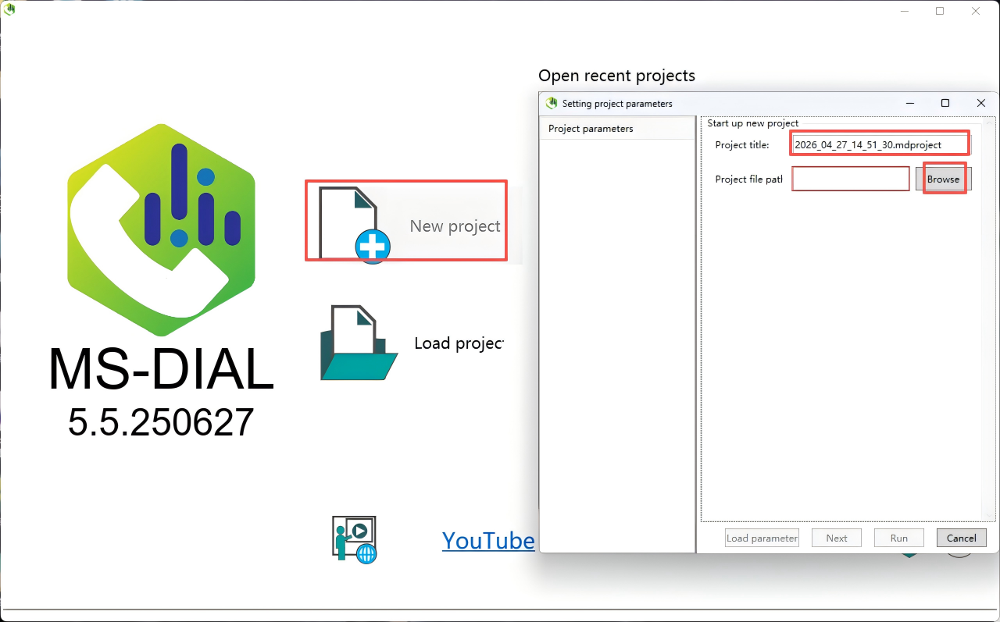
Step 2. Import Files
Import data files. MSDIAL5 supports importing raw vendor formats, but it is recommended to convert raw data to the open-source mzML format, which offers the strongest compatibility and highest processing stability, and avoids reading errors caused by vendor proprietary formats. Set "Type, Class ID, Acquisition, Analytical order", etc., and then click "Next".
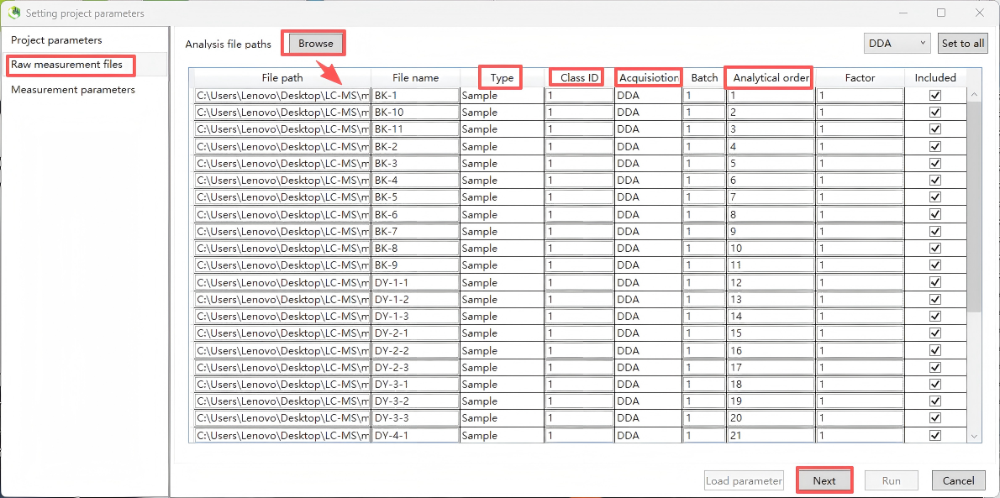
Step 3. Set measurement parameters
Set the measurement parameters, including “Ionization type”(select according to the experiment; for routine untargeted metabolomics, choose LC-MS/MS), “Separation type” (select according to the experiment; for routine untargeted metabolomics, choose LC)
“Collision type” (select according to the experiment; for routine untargeted metabolomics, choose LC-ESI, CID), “Data type” (for routine untargeted metabolomics, select Centroid), “Ion mode” (select Positive or Negative according to the experiment, and note that positive and negative ion data must be processed in separate projects), and “Target omics" (for metabolomics, select Metabolomics/Lipidomics; for dedicated lipidomics analysis, you may optionally select "Lipidomics"). After configuration, click “Next”.
Note: It is critical that positive and negative ion mode data be processed in separate projects; mixing them in a single project will lead to abnormal peak alignment and identification results.
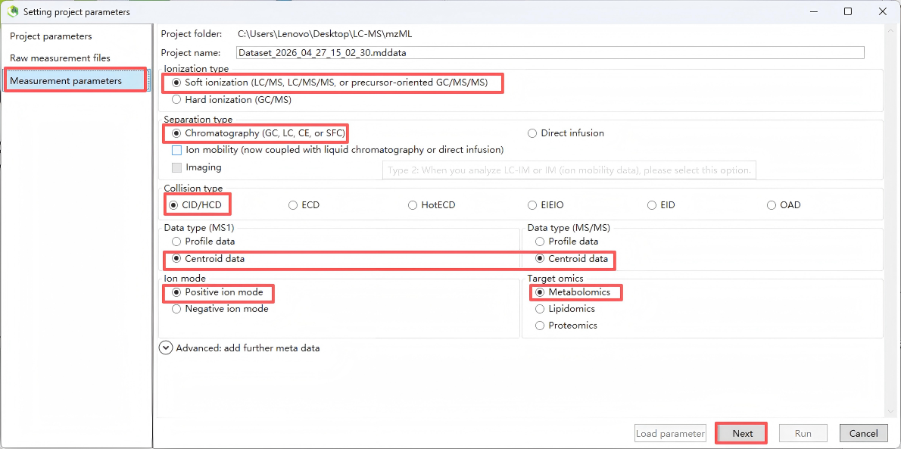
Step 4. Data collection
Set MS1/MS2 tolerances and data acquisition parameters. If processing large datasets, you can reduce runtime by setting the multithreading option in the 'Advanced' menu.
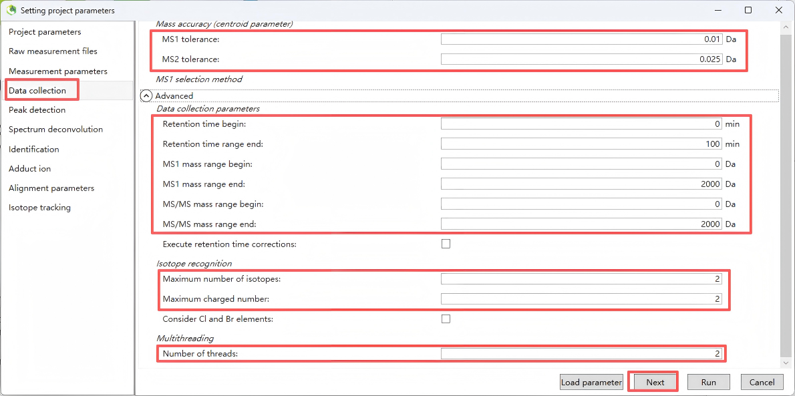
The parameter settings recommended in the table below are for reference only. For actual use, please adjust them according to your specific instrument and conditions.
| Parameter | Description | Recommended Range |
|---|---|---|
| MS1 m/z range | Mass-to-charge scan range for MS1 | Same as the acquisition method; for routine metabolomics: 50–1500 m/z |
| MS2 m/z range | Mass-to-charge scan range for MS2 | Same as the acquisition method; for routine metabolomics: 50–1500 m/z |
| Retention time start | Start point of chromatographic retention time | Set according to the gradient; recommended to exclude solvent front (e.g., 0.5 min) to avoid dead-volume peaks |
| Retention time end | End point of chromatographic retention time | Keep the same as the total gradient runtime (e.g., 20 min) |
| MS1 mass tolerance | Mass tolerance (precursor ion) |
• High-resolution Orbitrap: 5–10 ppm (~0.0025–0.005 Da) • TOF: 10–20 ppm (~0.005–0.01 Da) • Low-resolution: 0.05–0.1 Da |
| MS2 mass tolerance | Mass tolerance (fragment ion) |
• High-resolution Orbitrap: 10–15 ppm (~0.005–0.0075 Da) • TOF: 15–25 ppm (~0.0075–0.0125 Da) • Low-resolution: 0.05–0.1 Da |
| Number of threads | Number of parallel processing threads | Set to the number of CPU cores (max. 16 threads); significantly speeds up processing for large batch samples |
Step 5. Peak detection
This step is used to set the MS1 peak detection rules, which determine the number and quality of metabolite features extracted.
| Parameter | Description | Recommended Settings & Notes |
|---|---|---|
| Peak detection type | Peak detection algorithm type | Recommended: Linear weighted moving average (LWMA) – suitable for most LC-MS data |
| Minimum peak height | Minimum peak height threshold |
Core parameter determining detection sensitivity. • Orbitrap high-resolution MS: 1E3 – 1E4 • TOF MS: 1E4 – 5E4 Value should at least match the minimum threshold for MS2 trigger. Too high → loss of low-abundance metabolites. Too low → introduction of many noise peaks. |
| Mass slice width | Mass slice width |
Match with MS1 mass tolerance. • High-resolution MS: 0.01 Da • TOF MS: 0.02 Da |
| Smoothing level | Smoothing level |
Recommended: 2–3. Higher values provide smoother peak shapes and reduce noise, but excessive smoothing may cause narrow peaks to be lost. |
| Minimum peak width | Minimum peak width |
Set according to chromatographic peak width. • UPLC: 5–10 scan points • Conventional HPLC: 10–15 scan points |
| Exclusion Mass list | Exclusion list |
Import a list of m/z values for known contaminants,
internal standards, plasticizers, etc. These ions will be excluded during peak detection, reducing interfering peaks. |
Key optimization tip: It is recommended to run a pre experiment using 1–2 representative samples. Adjust the minimum peak height threshold to ensure the number of peaks falls within a reasonable range (for typical serum/tissue samples, 5000–20000 peaks per sample is recommended), avoiding excessive extraction of noise peaks.
After completing the settings, click Next.
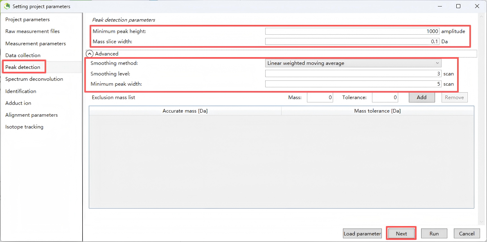
Step 6. Spectrum deconvolution
This step performs MS/MS deconvolution to extract clean MS/MS spectra for subsequent compound identification.
For “MS/MS abundance cutoff” (MS/MS abundance cutoff threshold), Used to filter out noisy fragment ions in MS/MS spectra. Recommended: 0 (no cutoff). If MS/MS spectra are too noisy, set to 100–500, but must be lower than the minimum MS1 peak height threshold.
After completing the settings, click Next.
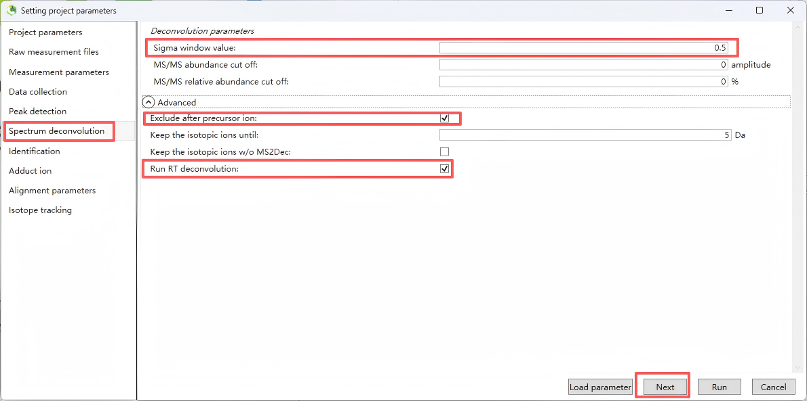
Step 7. Identification
Set up a structural identification database for structural annotation.
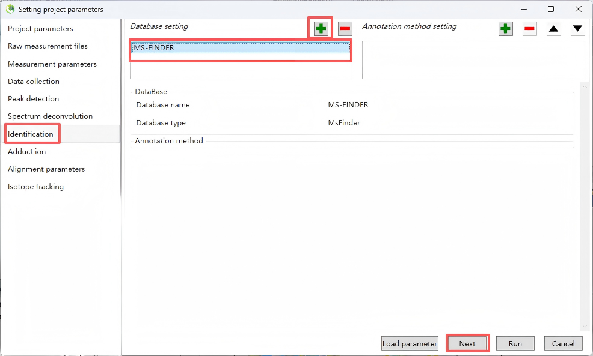
Step 8. Adduct ion
Select common adduct ion forms according to positive or negative polarity. For positive polarity, typically select [M+H]⁺, [2M+H]⁺, [M+Na]⁺, and [2M+Na]⁺; for negative polarity, typically select [M–H]⁻.
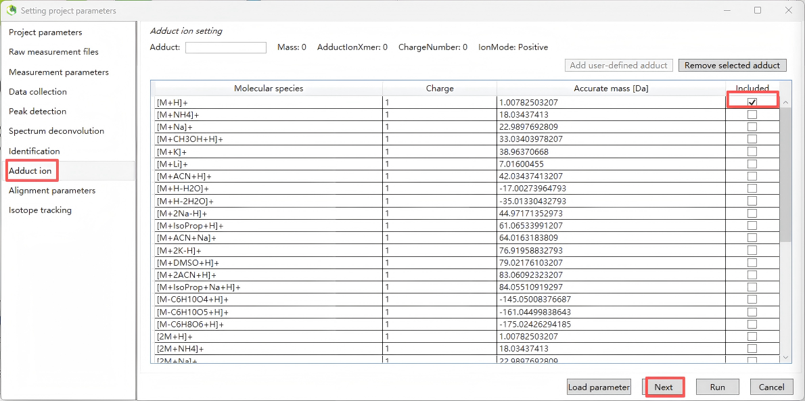
Step 9. Alignment parameters
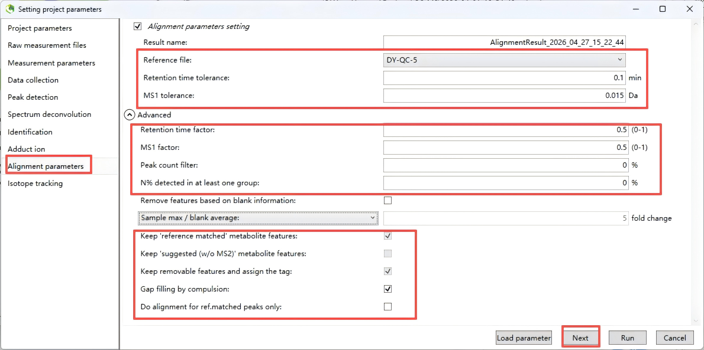
Below are the recommended settings for each alignment parameter, based on typical LC-MS metabolomics workflows (e.g., using MS-DIAL, MZmine).
| Parameter | Recommendation | Explanation |
|---|---|---|
| Result name | Keep auto-generated or use a meaningful name (e.g., Alignment_Project_Date) | Helps track different alignment runs. |
| Reference file | Select a representative QC sample or pooled sample | Typically the QC with the most detected features or the middle injection of a QC batch. |
| Retention time tolerance | 0.05 – 0.2 min (3–12 seconds) |
For UPLC, start with 0.1 min. For HPLC, can be 0.2–0.3 min. Must match chromatographic reproducibility. |
| MS1 tolerance | 0.01 – 0.02 Da for high-resolution MS (Orbitrap/TOF); 0.05 Da for low-resolution |
The shown 0.015 Da is appropriate for Orbitrap at m/z < 400. Adjust to your instrument’s mass accuracy. |
| Retention time factor | 0.5 (default) |
Weight for RT distance in alignment scoring (0–1). 0.5 gives equal weight to RT and m/z. Very stable RT: increase to 0.7–0.9 Less stable RT: decrease to 0.3 |
| MS1 factor | 0.5 (default) |
Weight for m/z distance. Together with RT factor, should sum to 1. Keep 0.5 unless one dimension is much more reliable. |
| Peak count filter | 0% (no filter) initially |
Remove features appearing in less than X% of samples. Set after alignment (e.g., 50% in at least one group), but start with 0 to avoid losing low-abundance metabolites. |
| N% detected in at least one group | 0% initially |
Similar to above. Usually set later during statistical filtering (e.g., 50% or 80% within group). |
| Remove features based on blank information | Checked ✔️ | Highly recommended to remove background or contaminant peaks present in blank samples. |
| Sample max / blank average | 5 – 10 fold change |
Keep features where the maximum intensity in real samples is ≥5× the average intensity in blanks. 5 is a good starting point; increase to 10 for stricter cleaning. |
| Keep 'reference matched' metabolite features | Checked ✔️ |
Retain features matching the reference library (if used). Important for targeted or semi-targeted work. |
| Keep 'suggested (w/o MS2)' metabolite features | Checked ✔️ |
Keep features putatively matched by MS1 and RT but lacking MS2 confirmation. Many features may fall into this category. |
| Keep removable features and assign the tag | Unchecked □ (or check if review is needed) |
If checked, removed features are retained but tagged as “removable”. Useful for manual inspection. Usually unchecked for final clean feature tables. |
| Gap filling by compulsion | Checked ✔️ |
Fill missing peak intensities from raw data after alignment. Essential for obtaining a complete feature table. |
| Do alignment for ref.matched peaks only | Unchecked □ |
Align all detected peaks. Checking this restricts alignment only to library-matched peaks, which is not recommended for untargeted metabolomics. |
Step 10. Isotope tracking
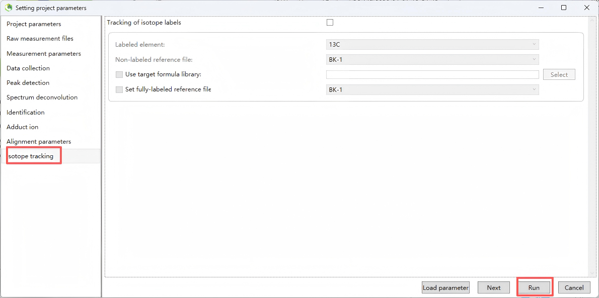
Step 11. Export
Export MGF and CSV files for subsequent analysis.
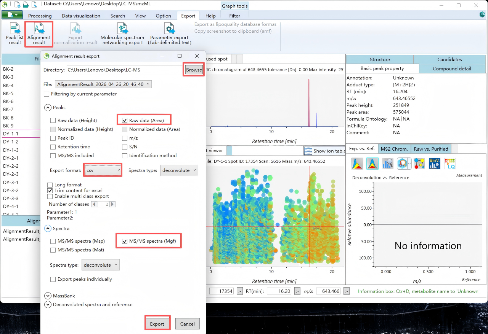